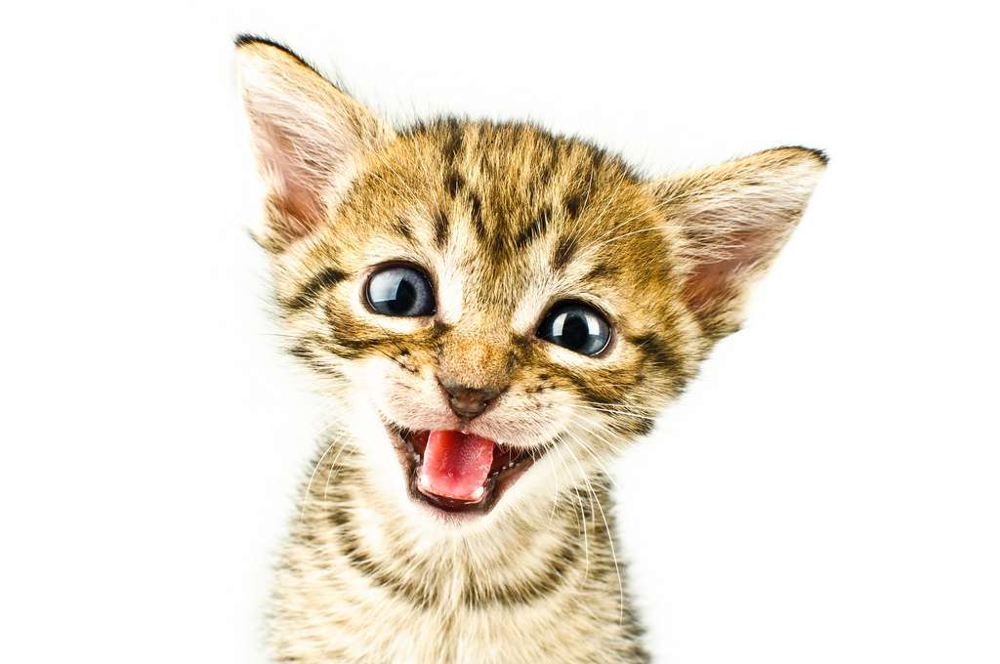

Status : Feeling blue
félix

Félix le Chat est créé par Otto Messmer et produit par Pat Sullivan. Il portait la signature de Pat Sullivan, mais était l'idée de Otto Messmer. Pat Sullivan décédé, son assistant Otto Messmer revendiqua le personnage. Feline Follies était le premier film du chat. L'influence graphique et poétique de la version animée de Krazy Kat y est manifeste. La série a eu un succès international tout au long des années...
félix
La première parution régulière de Félix en bandes dessinées dans les journaux du dimanche se fait dans le Daily Sketch en Angleterre, le 1er août 1923, dans une série hebdomadaire de 12 épisodes. C'est Otto Messmer qui l'a crayonnée et encrée. King Features Syndicate autorise la série à la republication dans toute l'Amérique à partir du 19 août, mais elle n'y apparaitra en définitive que le 24 du mois.
félix

Félix le Chat est créé par Otto Messmer et produit par Pat Sullivan. Il portait la signature de Pat Sullivan, mais était l'idée de Otto Messmer. Pat Sullivan décédé, son assistant Otto Messmer revendiqua le personnage. Feline Follies était le premier film du chat. L'influence graphique et poétique de la version animée de Krazy Kat y est manifeste. La série a eu un succès international tout au long des années...
félix
Félix le Chat est créé par Otto Messmer et produit par Pat Sullivan. Il portait la signature de Pat Sullivan, mais était l'idée de Otto Messmer. Pat Sullivan décédé, son assistant Otto Messmer revendiqua le personnage. Feline Follies était le premier film du chat. L'influence graphique et poétique de la version animée de Krazy Kat y est manifeste. La série a eu un succès international tout au long des années...
Upcoming event
Princetown
TGIF